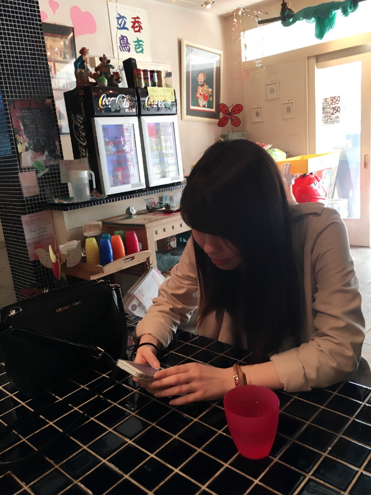

| Name | 安江志織 |
|---|---|
| Birth | 1996.01.19 |
| Course | お茶の水女子大学理学部情報科学科3年 |
| Home Village | 千葉県船橋市 |
| About Me | 0歳 千葉市に産まれる 2歳 船橋市に引っ越す 12歳 私立東邦大学付属東邦中学校入学 15歳 そのまま高校へ 18歳 お茶の水女子大学情報科学科入学 20歳 動画編集のインターンを始める |
| Hobby | 水泳・ダンス・テレビを見ること |
| Job | 2014年5月〜 個別指導塾講師 2014年9月〜 サンマルクカフェ 2015年7月〜9月 Tech Kids Camp 2016年6月〜 エブリー |